Most of the package works on one instrument at a time.
Account is the exception: it stands for the whole trading
account behind UBI, across every broker UBI is connected to, and its
three members are the kill switch that empties it,
flatten(), and two readers of UBI’s order engine,
parents and intent().
These are real orders.
flatten() stops every synthetic order UBI’s order engine
is running, cancels every open order at every broker, and then sends a
real market order to close every open position, in every instrument,
with real money. Market orders fill at whatever price is there, and
nothing is retried or undone. Always run it with
dry_run = TRUE first, read what it would do, and send the
real call only when you mean it.
The table below lists the class and its members.
| Kind | Member | Description |
|---|---|---|
| class | Account |
The trading account UBI trades for, across every broker it is connected to. |
| places orders | flatten |
Stops every synthetic order, cancels every open order at every broker, then closes every position in the account. |
| active binding | parents |
Every synthetic order and held order that UBI’s order engine has not finished, in every instrument. |
| method | intent |
Reads what UBI’s order engine did with one order after its placement stopped waiting for the answer. |
The reference page Account documents the same class as it appears in the package’s roxygen2 documentation.
Account
Account$new(unified_broker_interface = NULL) builds the
class.
An Account holds nothing but the client it sends
requests through, so constructing one sends no request. By default it
takes the same client every instrument uses, from Instrument$shared_unified_broker_interface().
Sharing that client keeps the session to one cached access token and one
place that reconnects after HTTP 401. A second client would not log the
instruments out, because UBI hands every client the token already in
force, but it would hold a second copy of the token and reconnect on its
own.
Parameters
| Name | Type | Required | Default | Description |
|---|---|---|---|---|
unified_broker_interface |
UnifiedBrokerInterface or NULL
|
no | NULL |
The client to use, or NULL to share the one every
instrument uses, which is almost always right. |
Example
The example below builds an account that shares the instruments’ client.
trading_account <- Account$new()Errors
| Condition | When |
|---|---|
| A plain R error | No client was given, and the shared client’s base URL or MongoDB
credentials are not configured. The Python library raises
ValueError here; the R client signals an ordinary error
from stop(), so catch it with an error
handler. |
flatten
flatten(confirm, dry_run = FALSE, timeout_seconds = 120)
places orders, and each call sends
POST /api/orders/flatten.
This method sends UBI’s kill switch. UBI first halts every parent its
order engine has not finished, so no armed trigger, trailing stop or
grid can place anything afterwards. It then cancels every open order at
every broker, waits until the brokers’ order books confirm the
cancellations, and only then closes every open position, each with a
market order on the side that closes it, at the broker that holds it,
all at once. Finally it waits again until the brokers’ positions show
zero before it answers that the account is flat. It acts on the whole
account; to close only one instrument’s positions, use liquidate_all_positions()
on that instrument instead.
You have to type the confirmation word yourself. UBI refuses the
request unless its body carries confirm set to exactly
FLATTEN, and the package passes your word through unchecked
rather than filling it in, so that one stray flatten() call
cannot unwind the account.
Why the cancels go first
The order of the two halves is the whole point. Suppose you hold a long position with a stop-loss order resting below it. If the position were closed first, the stop would still be live at the exchange, and when the price later fell to it, it would sell again and leave you short: a new trade that nobody chose. So UBI cancels first, re-reads the order books every quarter of a second until they agree the orders are gone, and only then sends the closing orders.
The diagram below shows the three middle steps in the order they happen. It leaves out the two steps UBI added on 2026-09-27: before the cancels, UBI halts every open parent in its order engine, and after the closes, it waits up to five more seconds for the brokers’ positions to show zero. Orange dots are the request and the cancels, which leave first. Blue dots are UBI re-reading the order books while it waits. Green dots are the closing market orders, which leave only after the wait.

Parameters
| Name | Type | Required | Default | Description |
|---|---|---|---|---|
confirm |
character | yes | Exactly "FLATTEN", in capitals. Anything else signals
BadRequestError and nothing happens. |
|
dry_run |
logical | no | FALSE |
TRUE reports what would be cancelled and closed, and
sends nothing. The package always sends it as a real JSON boolean, with
isTRUE(as.logical(dry_run)), because UBI reads this field
with Python’s bool(), so the string "false"
would count as a dry run. |
timeout_seconds |
numeric | no | 120 |
How long to wait for UBI’s answer. UBI waits up to five seconds for the cancels, sends the closes to its order engine together, and then waits up to five more seconds for the positions to show zero, so the call can take longer than the client’s usual 30 seconds. |
Example
The example below previews the kill switch, and then pulls it only if the preview shows something to do.
trading_account <- Account$new()
preview <- trading_account$flatten(confirm = "FLATTEN", dry_run = TRUE)
str(preview)
has_work <- length(preview$would_cancel) > 0 ||
length(preview$would_close) > 0
if (has_work) {
outcome <- trading_account$flatten(confirm = "FLATTEN")
str(outcome)
if (!isTRUE(outcome$flat)) {
cat("Not flat yet:\n")
str(outcome$still_open_after_waiting)
}
}There is no captured answer from this project’s UBI, because running
the example for real would empty the account. UBI’s offline suite
test_runs/order_flatten.py runs the route against stubbed
brokers, so no real order was involved, and its recorded answers show
the four shapes an answer can take. The table below summarises them, as
re-read from the suite’s recording as it stood on 2026-09-27; that suite
records only the names of the timing_ms entries, not their
numbers.
| Answer | What UBI’s recorded answer held |
|---|---|
| Dry run |
dry_run was true. would_cancel held one
flattrade order, 26091500000021, with status
OPEN. would_close held one flattrade position,
RELIANCE-MIS, an intraday quantity of 10 to be
closed by a SELL with a close_quantity of
10. |
| Flat |
halted reported halted_parents 0.
cancelled held the same order, sent and accepted.
closed held the same position, sent and accepted as order
26091500000099 with HTTP status 200. Both
still_open_after_waiting lists were empty, and
flat was true. |
| Not flat, HTTP 207 | Everything was as in the flat answer, except that
still_open_after_waiting held
flattrade:26091500000021 and flat was
false. |
| Position still held, HTTP 207 |
cancelled was empty, the close was sent and accepted,
positions_still_open_after_waiting held
flattrade:RELIANCE-MIS, and flat was
false. |
In the first flat false answer, the broker still
reported the cancelled order as live when the five-second wait ran out,
so UBI closed the position anyway. In the second, the broker accepted
the close but still reported the position when the second wait ended,
which can mean the exchange rejected the close after the broker accepted
it, or only that the broker’s positions had not caught up.
Returns
A named list, which is UBI’s answer unchanged. A dry run returns the elements in the first table below.
| Name | Type | Description |
|---|---|---|
dry_run |
logical |
TRUE. |
would_cancel |
list | Each order that would be cancelled, with broker,
order_id and status. |
would_close |
list | Each position that would be closed, with its broker, product, signed
quantity, the closing transaction_type and the
close_quantity. |
A real run returns the elements in the table below.
| Name | Type | Description |
|---|---|---|
halted |
named list | How many of the order engine’s open parents were halted before
anything was cancelled, under halted_parents, or an
error saying why none could be, such as the engine not
running; flatten carries on regardless. |
cancelled |
list | One entry per cancel attempted, with broker,
order_id, sent, outcome and
status_message. |
still_open_after_waiting |
list of character values | Orders a broker still reported as live when the wait ended, written
as broker:order_id. |
closed |
list | One entry per position, with the position’s fields plus
sent, outcome, order_id,
http_status and status_message. |
positions_still_open_after_waiting |
list of character values | Positions whose close was accepted but which a broker still reported
when the second wait ended, written as
broker:position_key. |
flat |
logical |
TRUE only when every cancel was sent, nothing was still
open after the wait, every close was sent and accepted, and every closed
position showed zero before the second wait ended. |
timing_ms |
named list | How long UBI took, including every broker call and the wait. |
When any part was not done, UBI answers HTTP 207 rather than an
error, so the method returns normally and flat is
FALSE. It deliberately does not signal an error, because
you need the closed entries to see what is left. Always
check flat, preferably with
isTRUE(outcome$flat). UBI’s page on the flatten
route lists every field and every message an entry can carry.
Errors
| Condition | When |
|---|---|
BadRequestError |
confirm is not exactly "FLATTEN". |
ServiceUnavailableError |
UBI could not read the order books or positions at the start. Nothing was sent. |
UnreachableError |
No answer arrived within timeout_seconds. Part of the
flatten may still have happened. |
UnifiedBrokerInterfaceError |
Any other failure reported by, or on the way to, UBI. |
A timeout does not mean nothing happened.
UBI works through the cancels and the closes, and it carries on after
the package has stopped waiting. After an UnreachableError,
read the orders and positions before you call flatten()
again, or a second flatten may close positions twice.
What flatten does not do
Two things are outside what the kill switch touches, and the numbered list below gives them. UBI closed the two larger gaps this page used to list on 2026-09-26 and 2026-09-27: flatten now halts armed synthetic orders first, and each close goes to the broker that holds the position.
-
A halted parent’s position is not handed back.
Halting a parent ends it as
cancelledwithout touching its legs, which the cancellations then take care of, and a position it had opened is closed like any other. Nothing restarts the parent afterwards. - Only net positions are closed. A broker that reports a position both on a day basis and on a net basis would otherwise be closed twice, so UBI closes the net row only.
Flatten compared with the other ways to close
The package has three ways to close positions, and they differ in reach and in whether they cancel orders first. The table below compares them.
liquidate_all_positions() |
SquareOffOrder |
flatten() |
|
|---|---|---|---|
| Reach | One instrument | One product, or a chosen list of instruments | The whole account |
| When | Now | At a time of day | Now |
| Cancels resting orders first | No | Yes | Yes |
| Closes with | Market or limit orders, your choice | Limit orders | Market orders |
| Needs UBI’s order engine | Yes | Yes | Yes, for the halt and the closes |
| Leaves overnight positions alone | No | Yes | No |
Under the hood.
The body is
{"confirm": "<your word>", "dry_run": true or false},
sent with the shared client’s post() and a per-request
timeout of timeout_seconds. UBI decides what to cancel and
what to close from each broker’s own order book and positions in Redis,
not from the merged portfolio document. Every order whose status is not
COMPLETE, CANCELLED, REJECTED or
EXPIRED is cancelled, including one with a status UBI does
not recognise, because an unknown status is more likely to be a live
order than a finished one. UBI’s page What
it does, step by step follows a real run through every request.
parents
parents is an active binding, and each read sends
GET /api/orders/parents.
This active binding gives every parent UBI’s order engine has not
finished, in every instrument. A parent is one order the engine was
asked for, such as a bracket, a trailing stop or a limit order it is
holding until the book reaches its price. It is the list to read after a
flatten or an engine restart, to see what is still working. TradeableInstrument$parents
gives one instrument’s.
Returns
A data.frame with one row per parent, shaped like TradeableInstrument$parents,
with nested fields such as body, parameters
and legs as list columns, or NULL when no
parent is open.
intent
intent(intent_id) is a method, and each call sends
GET /api/orders/intents/<intent_id>.
This method reads what UBI’s order engine did with one order after
its placement stopped waiting for the answer. Every answer to placing an
order carries an intent_id, and so does the
detail of an OrderOutcomeUnknownError
signalled when the engine did not answer within UBI’s five-second wait.
UBI keeps each answer for five minutes by default after the engine gives
it, so read it soon.
Parameters
| Name | Type | Required | Default | Description |
|---|---|---|---|---|
intent_id |
character | yes | The intent_id from the placement’s answer or from the
condition’s detail. |
Example
The example below places an order and, when UBI’s wait runs out, reads the engine’s answer a moment later instead of sending the order again. No output was captured for it, because it places a real order.
reliance <- Equity$new(exchange = "nse", symbol = "RELIANCE")
answer <- tryCatch(
reliance$buy_at_market_price(quantity = 1, product = "cnc"),
OrderOutcomeUnknownError = function(error) {
Sys.sleep(2)
stored <- trading_account$intent(error$detail[["intent_id"]])
stored[["response"]]
}
)
print(answer[["outcome"]])